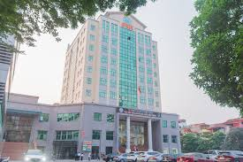
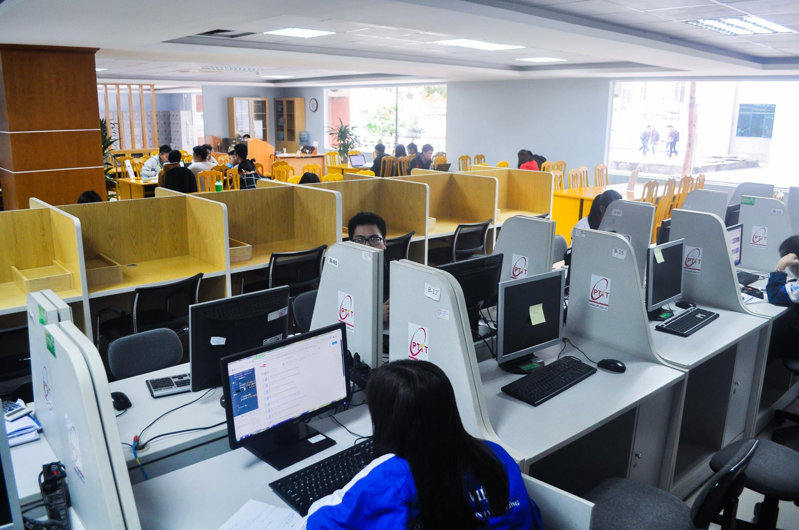
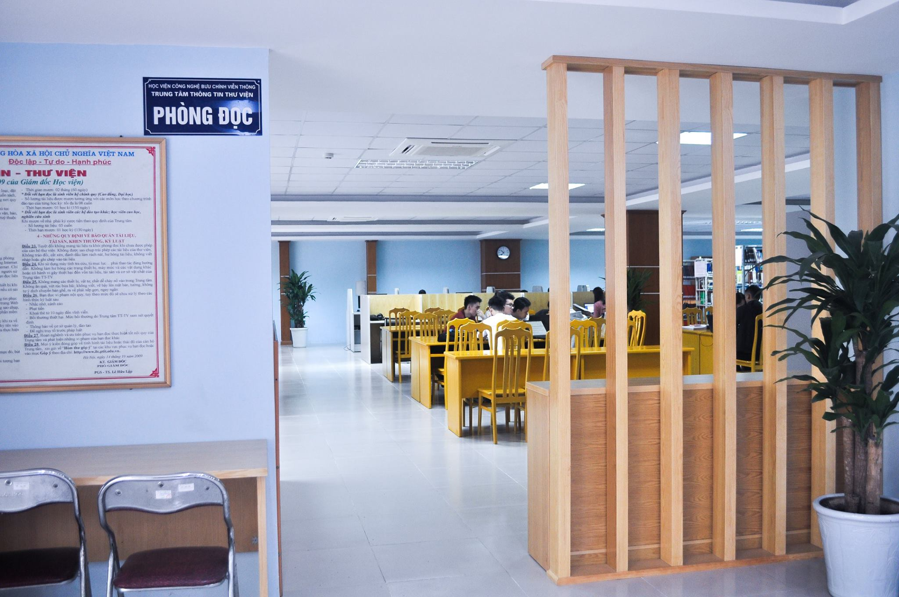
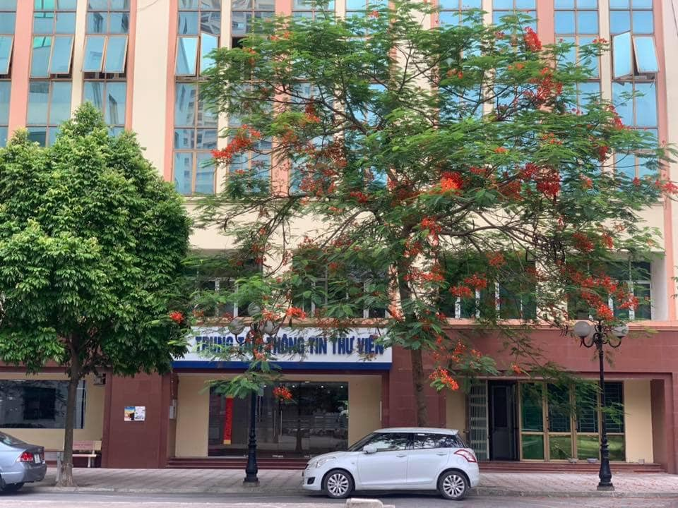
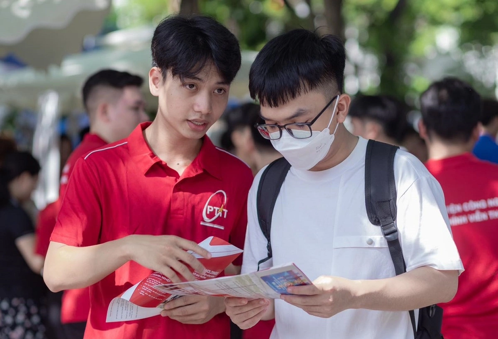

– Tên giao dịch bằng tiếng Anh: Information and Library Center
– Posts and Telecommunications Institute of Technology (ILC – PTIT)
– Địa chỉ: Km10, Nguyễn Trãi, Hà Đông, Hà Nội
– ĐT: Văn phòng 04.38548335; Website: https://tttv.ptit.edu.vn/
Cánh cửa mở ra tri thức toàn cầu
Thư viện sở hữu nguồn lực thông tin phong phú, đa dạng với hàng trăm nghìn đầu giáo trình và tài liệu bản giấy...
Ngoài ra, Trung tâm phục vụ các nguồn dữ liệu đặc thù có giá trị cao về kỹ thuật, công nghệ và kinh tế số nhằm hỗ trợ tối đa cho sinh viên trong việc tra cứu thông tin chuyên sâu; cùng các nguồn tài nguyên giáo dục mở quốc tế (OER) và cơ sở dữ liệu khoa học công nghệ trong nước.


Đặc biệt, Thư viện lưu trữ một khối lượng lớn tài liệu nội sinh: hơn 22.000 luận văn thạc sĩ, gần 2.000 luận án tiến sĩ, hơn 8.000 khóa luận tốt nghiệp và nhiều đề tài nghiên cứu khoa học. Đây là nguồn tri thức thực tiễn, phản ánh trực tiếp năng lực nghiên cứu của các thế hệ sinh viên, học viên và nhà nghiên cứu tại PTIT.
Việc được tiếp cận một hệ sinh thái toàn diện như vậy giúp sinh viên thay đổi cách học: từ tiếp nhận kiến thức sang chủ động khám phá, nghiên cứu và sáng tạo. Đây chính là nền tảng vững chắc để sinh viên PTIT tự tin bước vào môi trường học thuật quốc tế, nơi mà khả năng tìm kiếm, đánh giá và sử dụng thông tin một cách hiệu quả là chìa khóa thành công.
Không chỉ mạnh về tài nguyên, Thư viện PTIT còn được đầu tư cơ sở vật chất với tổng vốn lớn, tạo nên một môi trường học tập hiện đại và thông minh.
Hệ thống công nghệ tiên tiến như nhận diện khuôn mặt, cổng từ an ninh, chip RFID, máy mượn trả tự động, máy số hóa và khử trùng tài liệu, trợ lý ảo AI hỗ trợ bạn đọc sử dụng thư viện 24/7… giúp tối ưu hóa trải nghiệm người dùng. Sinh viên có thể tiếp cận tài liệu nhanh chóng, thuận tiện và an toàn trong mọi tình huống.
Song song với đó là hệ sinh thái phần mềm quản trị hiện đại: cổng thông tin thư viện Lima, hệ thống quản lý tài liệu in Sierra, hệ thống quản lý tài liệu số Dspace và ứng dụng đọc sách Neu Book Reader tích hợp công nghệ DRM bảo vệ bản quyền tác giả. Tất cả được kết nối đồng bộ, cho phép sinh viên truy cập tài liệu mọi lúc, mọi nơi. Trong môi trường đó, việc học không còn bị giới hạn bởi không gian hay thời gian. Sinh viên có thể học tập và nghiên cứu vào bất kỳ thời điểm nào, khai thác nguồn tài liệu toàn cầu chỉ với một thiết bị cá nhân, và chủ động hoàn toàn trong hành trình học tập của mình.


Với sự đầu tư mạnh mẽ về tài nguyên, công nghệ và cơ sở vật chất, Thư viện PTIT không chỉ là nơi lưu trữ tri thức mà còn là trung tâm đổi mới sáng tạo, hỗ trợ sinh viên phát triển toàn diện và tự tin hội nhập quốc tế. Giá trị cốt lõi của Thư viện PTIT không chỉ nằm ở việc cung cấp thông tin, mà ở khả năng thúc đẩy sáng tạo tri thức. Với nguồn dữ liệu phong phú và công cụ hỗ trợ hiện đại, sinh viên có thể thực hiện các nghiên cứu có chiều sâu, tham gia các hoạt động học thuật và phát triển các dự án mang tính ứng dụng cao. Việc tiếp cận dữ liệu chuyên sâu trong các lĩnh vực kinh tế, tài chính, quản trị… giúp người học nâng cao tư duy phân tích, khả năng phản biện và kỹ năng giải quyết vấn đề. Thư viện trở thành nơi chuyển hóa tri thức từ tiếp nhận tri thức sang sáng tạo tri thức.
Lợi thế khác biệt cho sinh viên trong hành trình phát triển
Trong bối cảnh cạnh tranh ngày càng cao, lợi thế của sinh viên không chỉ đến từ kiến thức học thuật, mà còn từ kỹ năng thực tiễn và khả năng thích ứng. Thư viện PTIT không chỉ cung cấp tài nguyên học tập, mà còn đóng vai trò như một bệ phóng toàn diện cho người học.
Hơn 2.200 case study tình huống thực tiễn từ các cơ sở dữ liệu quốc tế cũng là nguồn tài nguyên giá trị, giúp sinh viên vừa hiểu lý thuyết, vừa biết cách vận dụng vào các bối cảnh cụ thể. Nhờ đó, việc học không dừng lại ở tiếp thu kiến thức, mà trở thành quá trình tích lũy năng lực thực tế. Đây là yếu tố then chốt để sẵn sàng bước vào thị trường lao động.
Thư viện – nền tảng của đại học thông minh
Trong chiến lược phát triển đại học thông minh, Thư viện đóng vai trò là trụ cột kết nối tri thức, công nghệ và con người. Với định hướng số hóa toàn diện, Thư viện PTIT đã xây dựng một môi trường học tập mở, linh hoạt và giàu tính sáng tạo. Tại đây, sinh viên không chỉ học cách tìm kiếm thông tin, mà còn học cách tư duy, đặt câu hỏi và giải quyết vấn đề, tích lũy những năng lực cốt lõi để thích ứng với thị trường lao động không ngừng biến đổi.
Lựa chọn PTIT – lựa chọn một hệ sinh thái tri thức
Chọn một trường đại học là chọn nền tảng cho tương lai. Với Thư viện hiện đại, nguồn tài nguyên toàn diện và hệ thống công nghệ tiên tiến, NEU mang đến cho sinh viên kiến thức, bản lĩnh và những trải nghiệm đẹp đẽ trong hành trình thanh xuân. Chọn PTIT không chỉ là chọn một ngôi trường, mà là lựa chọn một hệ sinh thái tri thức giúp bạn tự tin bước ra thế giới!.